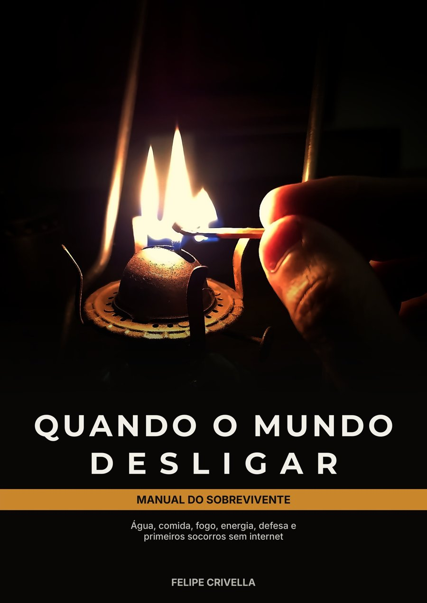
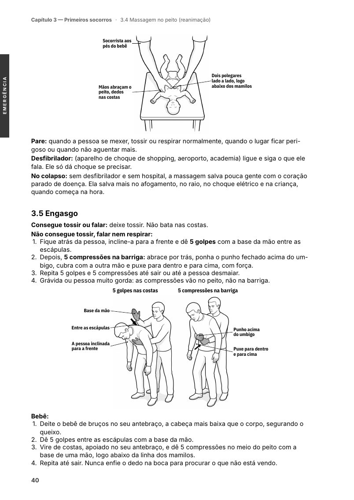
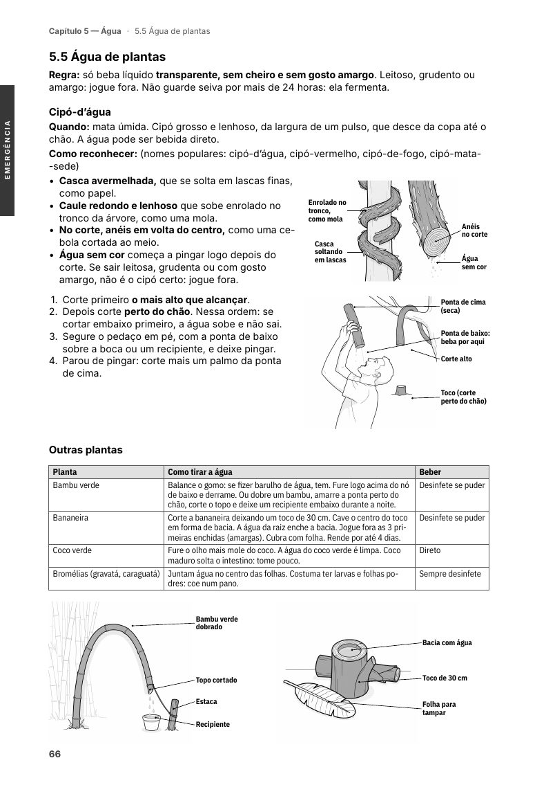
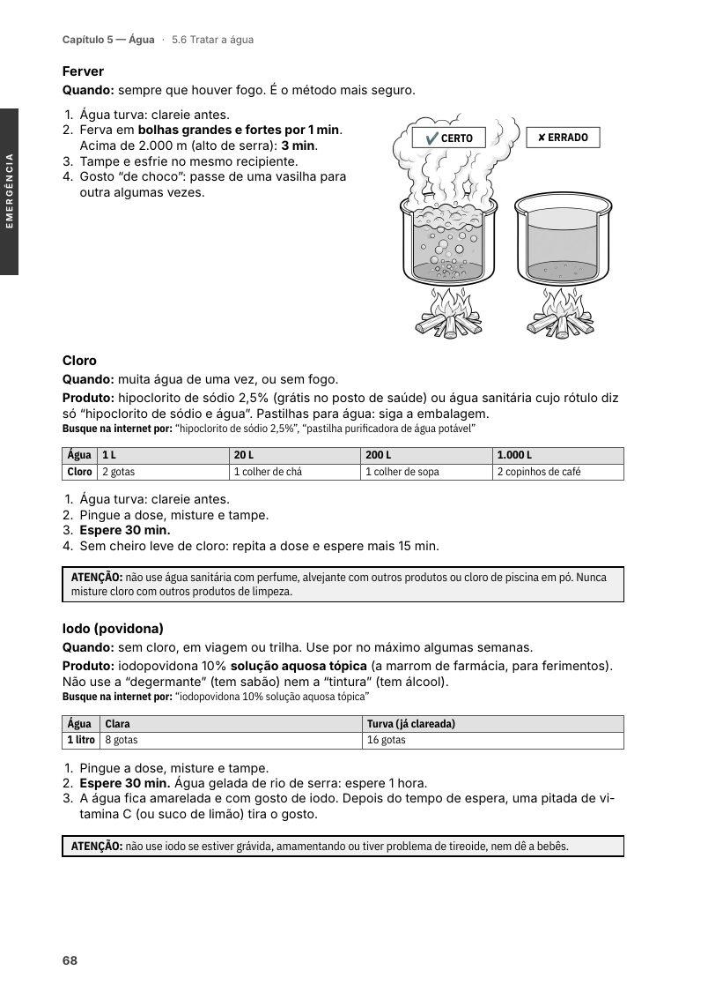
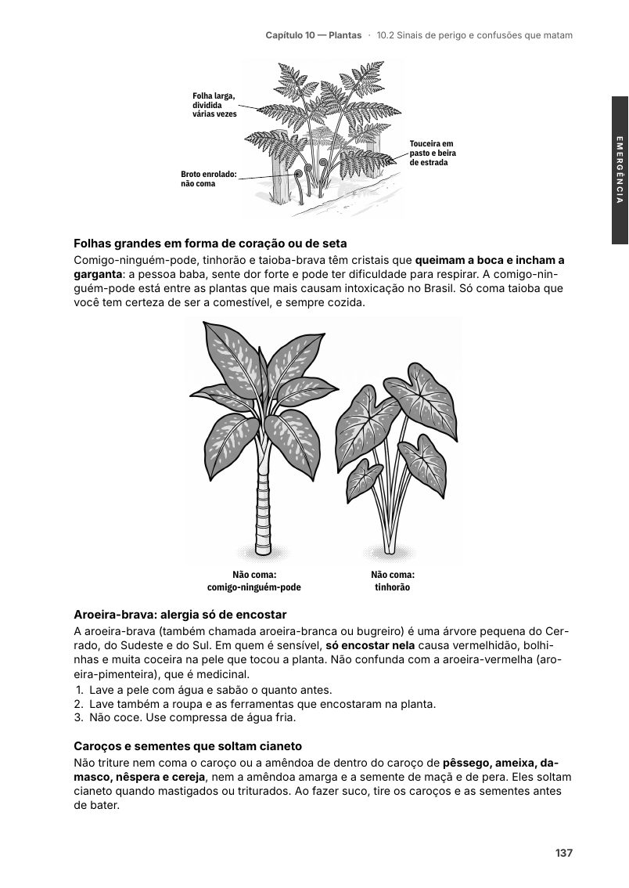
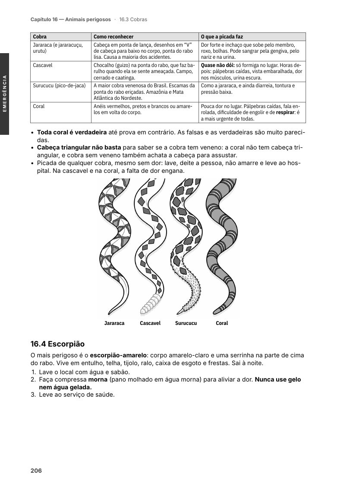
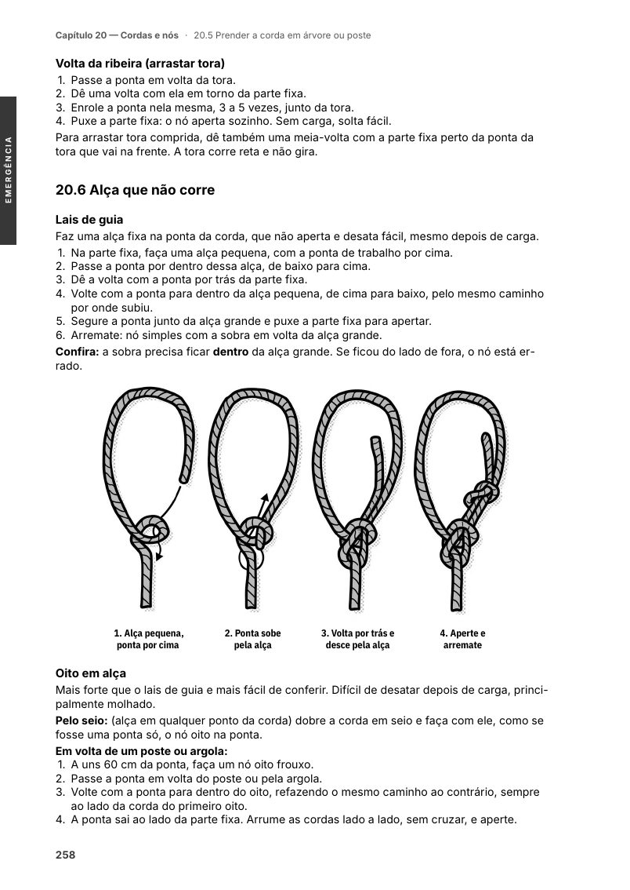
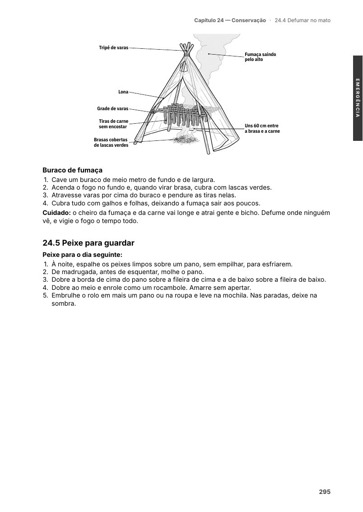
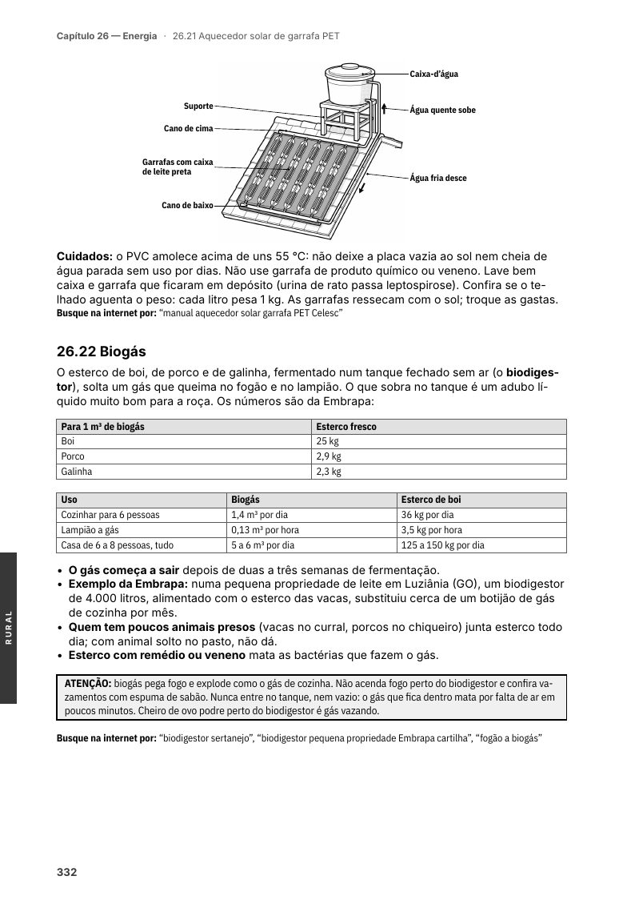
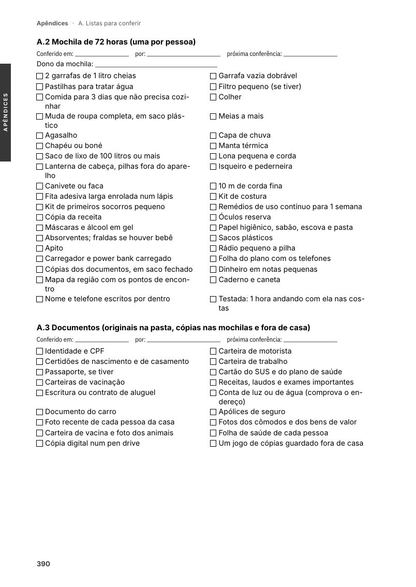

O manual de sobrevivência brasileiro para ler na tela e imprimir em casa
Para quando faltar luz, água, sinal e socorro: o que fazer, passo a passo, com desenho ao lado.
Garantia de 7 dias: leia e, se não servir, peça o dinheiro de volta.
Por que este livro
- Brasileiro de verdade. Plantas, cobras, bichos, clima, ambientes, leis e telefones do Brasil. Não é tradução de manual americano.
- Escrito para quando ninguém vem ajudar. Apagão longo, enchente, estrada fechada, socorro que demora.
- Passo a passo com desenho ao lado, no mesmo estilo do começo ao fim.
- Fontes citadas em cada capítulo: manuais do Exército, Ministério da Saúde, Embrapa, Butantan, Defesa Civil.
- Funciona sem internet. Baixe uma vez, guarde no celular e no computador, imprima o que for importante.
Veja por dentro
Páginas do livro, como estão. Toque para ampliar.


















O que tem dentro
- Parte 0: Abra em caso de emergência7
- Capítulo 1: Mentalidade e psicologia15
- Capítulo 2: Planejamento e preparação25
- Capítulo 3: Primeiros socorros e medicina de emergência37
- Capítulo 4: Abrigo e proteção contra o clima49
- Capítulo 5: Água63
- Capítulo 6: Fogo81
- Capítulo 7: Sinalização e comunicação97
- Capítulo 8: Orientação e navegação111
- Capítulo 9: Alimentação de emergência e nutrição123
- Capítulo 10: Plantas comestíveis e medicinais do Brasil135
- Capítulo 11: Plantas tóxicas e perigosas153
- Capítulo 12: Caça163
- Capítulo 13: Armadilhas e laços175
- Capítulo 14: Pesca185
- Capítulo 15: Preparo, cozimento e aproveitamento da caça e da pesca197
- Capítulo 16: Animais perigosos205
- Capítulo 17: Segurança e autodefesa217
- Capítulo 18: Segurança digital235
- Capítulo 19: Ferramentas e equipamentos improvisados243
- Capítulo 20: Cordas e nós255
- Capítulo 21: Ambientes brasileiros265
- Capítulo 22: Desastres e cenários urbanos275
- Capítulo 23: Previsão do tempo sem instrumentos285
- Capítulo 24: Conservação de alimentos e receitas de longa duração293
- Capítulo 25: Produção de alimentos307
- Capítulo 26: Energia321
- Capítulo 27: Higiene e saneamento337
- Capítulo 28: Saúde de longo prazo353
- Capítulo 29: Ofícios práticos369
- Capítulo 30: Vida em grupo e comunidade379
- Apêndices389
- Índice remissivo403
O que você recebe
- PDF para ler (17 × 24 cm): no computador, no tablet ou no celular.
- PDF A4 para imprimir em casa, com as fichas e listas dos apêndices para preencher.
- O acesso chega por e-mail logo depois do pagamento, pela Hotmart. Os arquivos ficam seus: baixe e guarde.
Quem escreveu
Felipe Crivella é projetista e cuteleiro. Tem oficina própria e mora na zona rural, na Serra da Mantiqueira. É o autor do canal Texugo do Mel, sobre bushcraft e sobrevivência.
Perguntas
Preciso de internet para usar?
Só para baixar. Depois, o PDF abre no celular ou no computador sem internet, e a versão A4 é feita para imprimir.
Tem o livro impresso?
Ainda não. A versão impressa está em preparação. Quem compra o PDF agora paga o preço de fundador.
E se eu não gostar?
Você tem 7 dias de garantia. Peça o reembolso pela Hotmart e recebe o valor de volta.
Quero ver antes de comprar
Leia o guia gratuito: primeiros socorros, água, fogo, comida e energia, com desenhos do livro.
Este livro não substitui atendimento médico, socorro profissional nem orientação das autoridades. Em emergência, ligue 192 (SAMU) ou 193 (Bombeiros).
Tenha em casa antes de precisar
Quero o livro — R$ 67garantia de 7 diasQuando o mundo desligar — Manual do Sobrevivente · Felipe Crivella
quandoomundodesligar.com.br